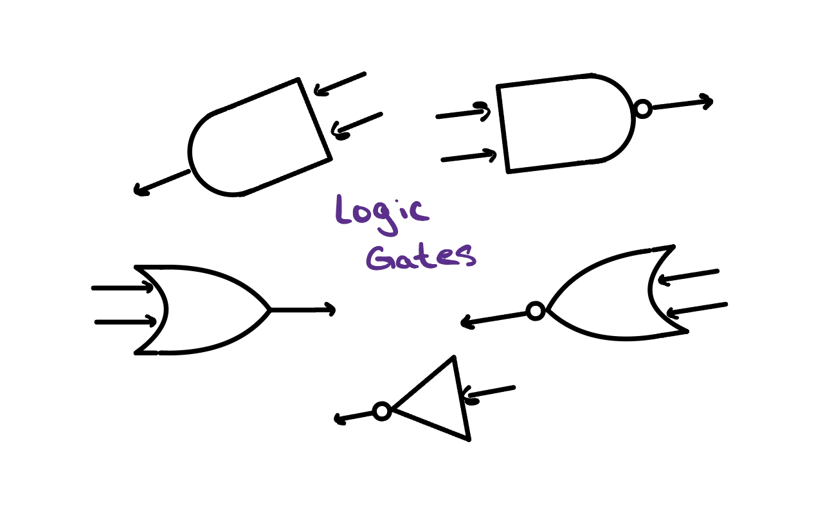
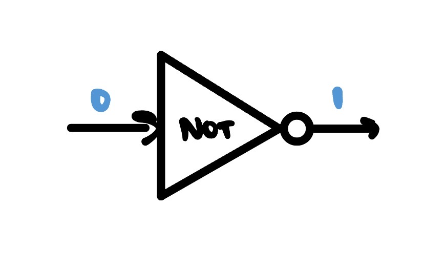
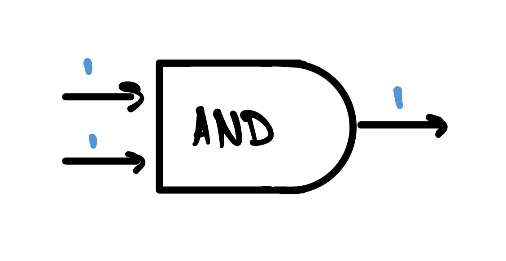
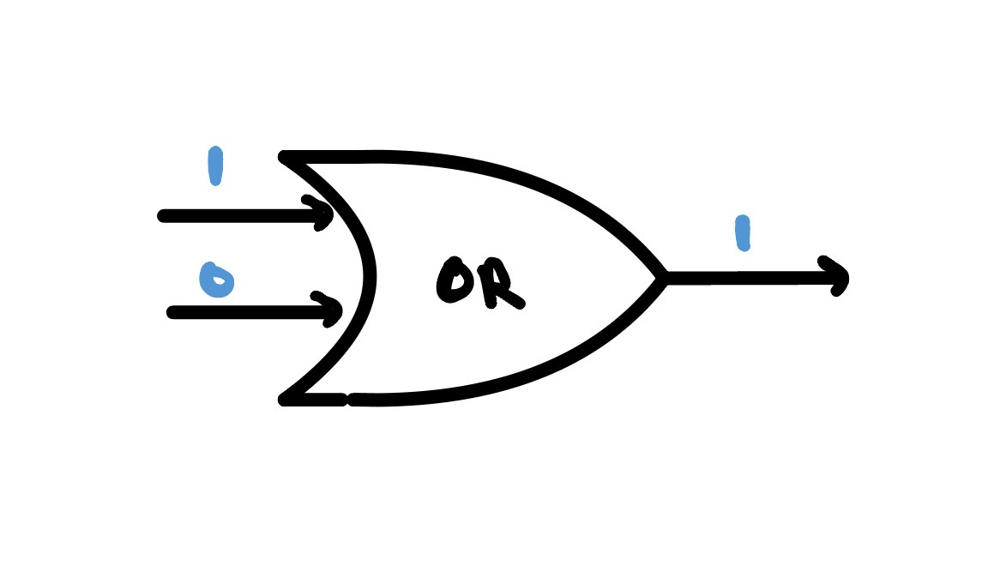
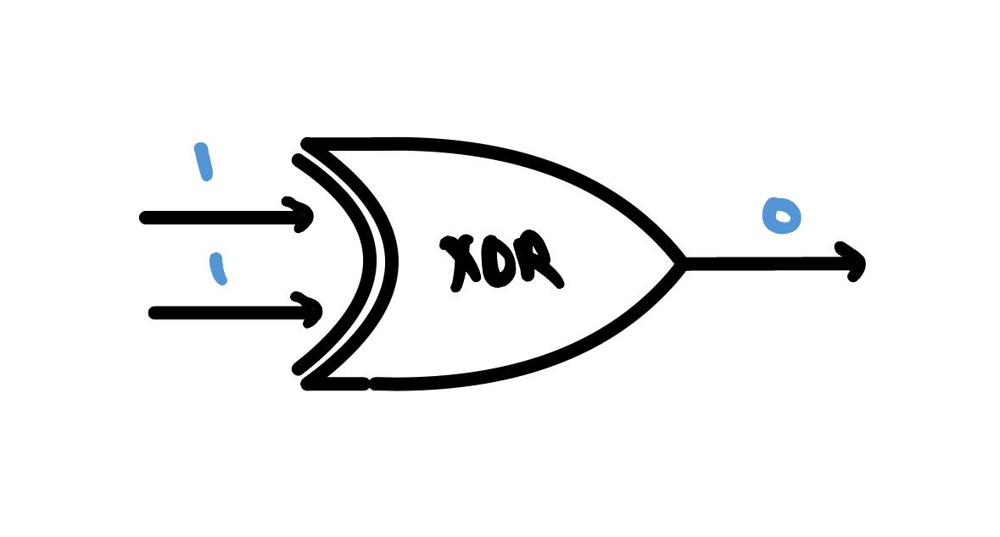
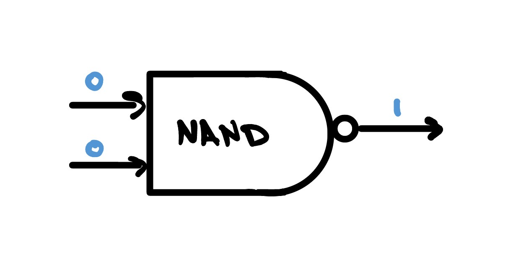
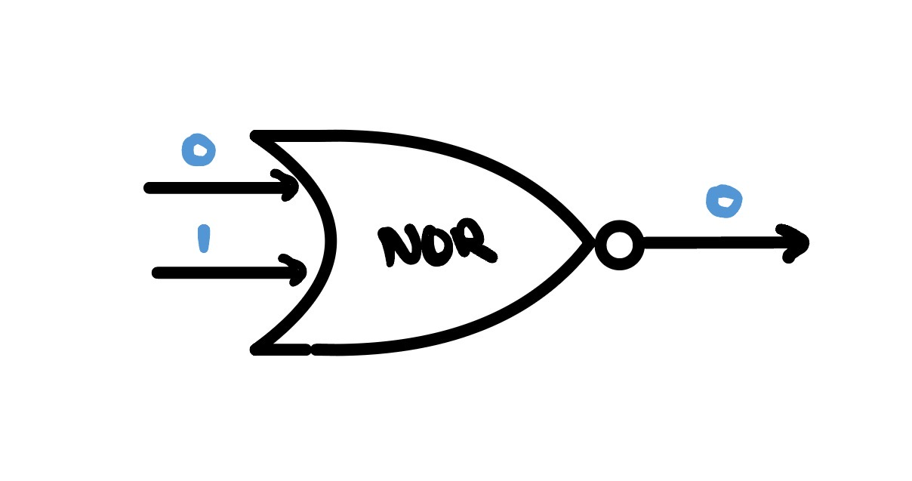
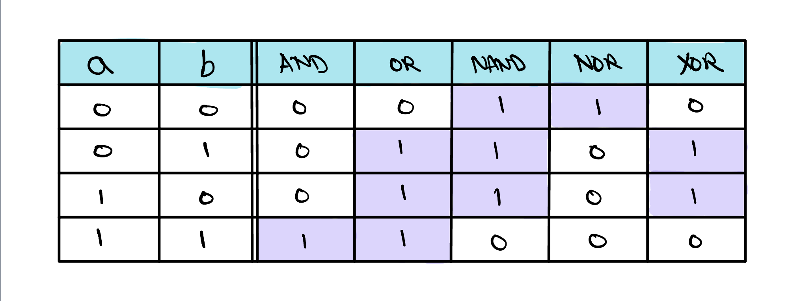
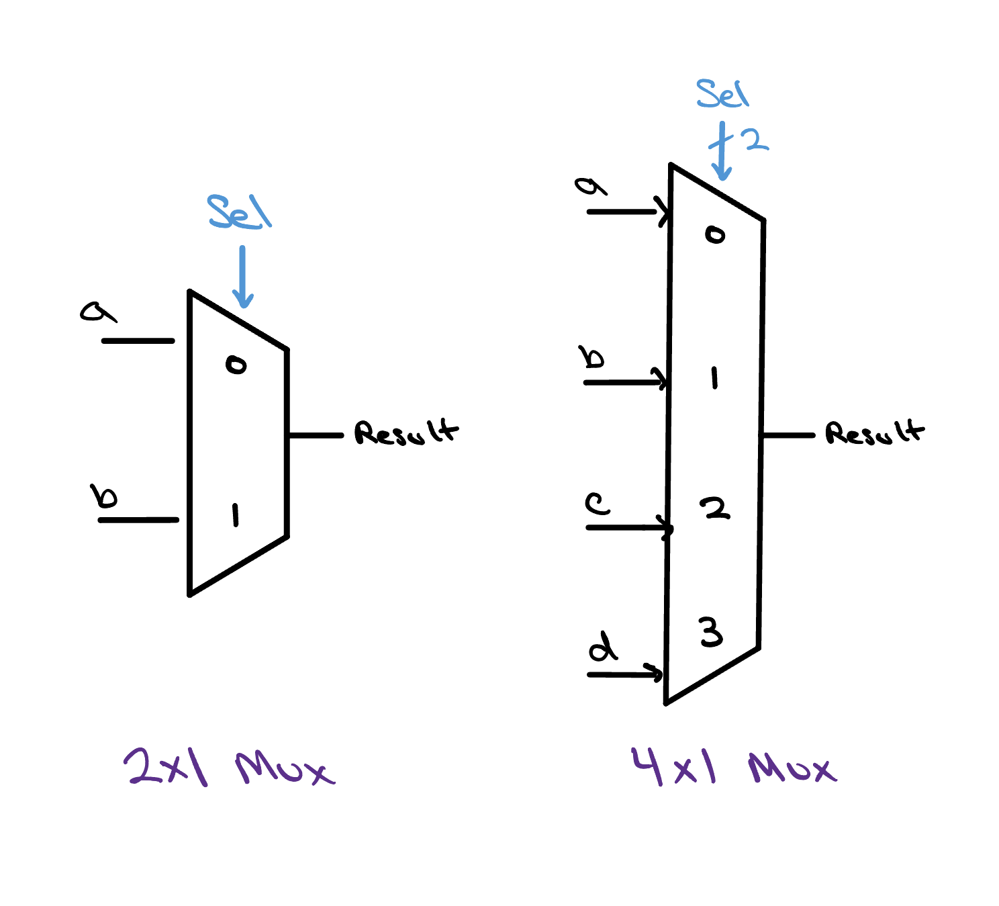
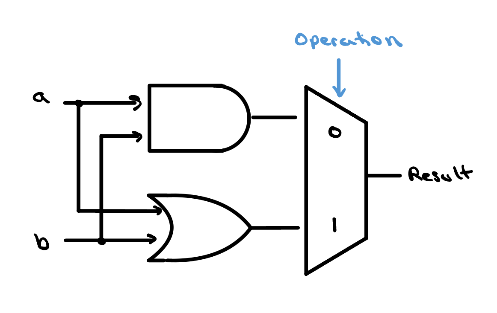

Logic Gates & the 1-bit ALU
Before a processor can add, compare, or decide anything, it has to make choices one bit at a time. Those choices are made by logic gates — the smallest building blocks in all of digital hardware. We'll meet the handful you need, then wire two of them together into your very first ALU.

1's and 0's
Quite a few people know that their phone, laptop, or even microwave run on a bunch of 1's and 0's, but what are these 1's and 0's exactly? Well… it depends!
The 0's are easy — they are 0 Volts (V) or ground in a circuit. The 1's however could be a couple different values depending on the power supply used in the circuit. Often called VDD or VCC, the power supply sets what voltage is read as a '1'. In some applications this '1' or 'high' voltage can be 5V, 3.3V or even 1.8V as technology advances.
We care about these 1's and 0's because they drive the fundamental building blocks of our digital circuits — gates. Gates are driven by wires, each of which carrying a 1 or 0 (most of the time). Depending on the combination of 1's and 0's the gate will send a new signal through the circuit.
Meet the gates
There are only a few gates you need to know, and most of them are named after the everyday word that describes their rule. We'll start with the simplest and build up.

0 becomes a
1, and a 1 becomes a 0.


0 and 0 give a 0.

0.

0 only when both inputs are 1.

1 only when both inputs are 0.
All of them, side by side
A gate only has a few possible inputs, so we can just list every one of them. A table like this is called a truth table — it's the complete, no-surprises definition of what a gate does. Read down any column to see that gate's personality.

b
marks the split between the two inputs and the gate outputs; each
highlighted cell is a 1.
NOT is the odd one out — with a single input, its whole table is just
0 → 1 and 1 → 0.
Choosing between answers

Result.
Gates compute answers — but a processor also needs to choose between answers. That job belongs to a multiplexer, or mux: a switch that takes several inputs and a small control signal, and passes exactly one of those inputs through to its output.
A two-way mux is the simplest kind. It has two data inputs,
labelled 0 and 1, and a single control
wire. When the control is 0 it forwards the first
input; when it's 1 it forwards the second. Nothing is
computed here — the mux just decides which existing signal gets to
be the answer. That single idea is what turns a pile of gates into
something that can perform different operations on command.
Muxes come in bigger sizes, too. A 4×1 mux chooses among four inputs, using a 2-bit select to name which one wins. The wider the mux, the more operations our ALU will eventually be able to offer.
Your first ALU
Here it is — a complete, if tiny, Arithmetic Logic Unit. It works on just a single bit, and it can do exactly two things: AND its inputs, or OR them. Simple as it looks, this little circuit already has the shape of every ALU ever built.

a and b fan out to
both gates at once; the Operation bit selects which
gate's answer leaves as Result.
How it works, wire by wire
Follow the two inputs, a and b, in from the
left. Notice that each one splits and feeds
both gates simultaneously: the AND gate and the OR gate are
always running, both computing their answer at the same time on every
pair of inputs.
Both answers then arrive at the multiplexer on the right. The
Operation control bit at the top decides which one
actually comes out as Result:
| Operation | Mux passes | Result is |
|---|---|---|
0 | the AND gate's output | a AND b |
1 | the OR gate's output | a OR b |
That's the whole trick, and it's worth pausing on: with a single
control wire, the same hardware performs two different
operations. The gates do the work; the mux, steered by
Operation, chooses which work counts. Scale that idea up
and you have the defining feature of an ALU — one block that carries
out whichever operation the processor asks for, moment to moment.
How we'll build on this
This one-bit, two-operation ALU is the seed for everything that follows in the project. Each of the next lessons grows it in one direction:
- More operations. Widen the multiplexer and hang more circuits off it — XOR, and above all addition, which needs a new building block called a full adder.
- More bits. Real processors work on 32 or 64 bits, not one. We'll line up copies of this slice side by side and pass a carry between them so they can add large numbers together.
- Status flags. A full ALU also reports about its answer — whether the result was zero, or whether an addition overflowed — so the processor can make decisions based on what just happened.